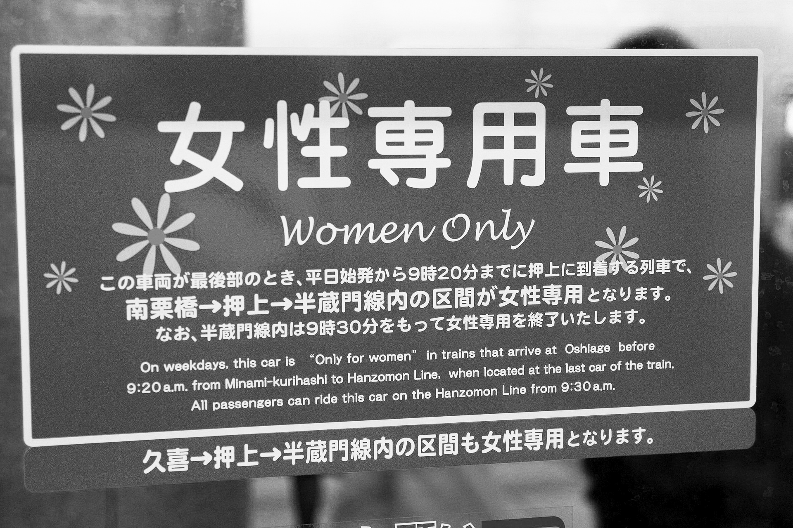
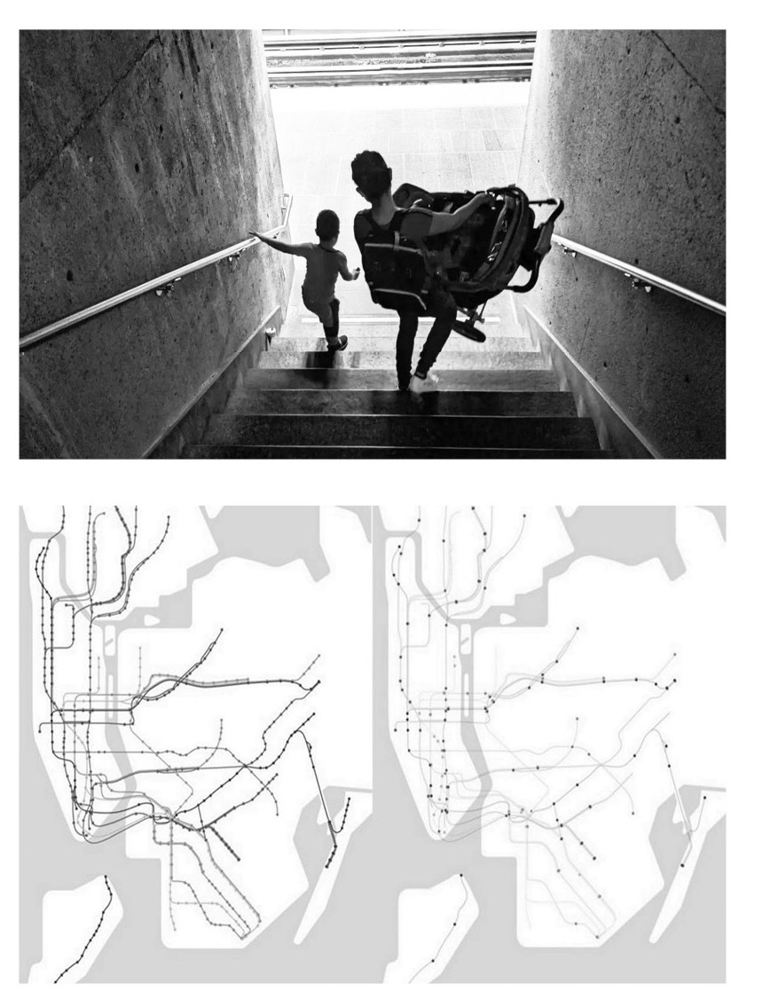

Theoretical Framework
The Feminist City
Six core principles through which Leslie Kern reframes urban life — each applied here to evaluate Finnish staircase typologies.
01 City Beyond Binaries
The concentration on the woman/man-home/work as a main factor in our city design has been widely discussed. In 1990, the Joy Boys (pp. 249-250) posited that these binary divisions have not only limited women’s domestic space but have also ignored and marginalized crucial issues of class, race, and culture. Over time, we must acknowledge significant advancements in comprehending women’s needs. The women-only passenger car in Japan is one of the examples. However, rape myths intensified their harshness toward the victims. “What were you wearing?” and “Why didn’t you report it?” were classic questions women faced after the tragedy. While gender-oriented design makes women’s insecurities visible, it also perpetuates these rape myths. According to Leslie Kern in Feminist City (2020, p. 51), relying heavily on the state for radical transformation is a waste of time, and in the case of Japan, even dangerous for women. The “women only” approach views women as a problem that the “progressive” city needs to solve or eliminate (Kern, 2020, p. 51). However, the essentialized binary of opposing spheres (public/private, outside/inside, economy/family, work/home, distance/intimacy, duty/love) oversimplifies the complexity of social society and easily marginalizes groups not included in these binaries (Jarvis et al., 2009, pp. 10-11). The urban staircase in Feminist City, which transcends binaries, fosters a more collective and collaborative approach to the intersection of multiple identities, thereby recognizing the diversity of the urban experience.

02 City of Mobility
‘A feminist city must be one where barriers - physical and social are dismantled, where all bodies are welcome and accommodated.’ Leslie Kern (2020, p. 52) wrote the statement. Erin Durkin (2019), in her report, highlighted that the majority of New York’s stations lack elevators. To extend Kern’s City of Moms, the struggle on inaccessible public transit for moms with strollers can be extended to inaccessible to various groups, including disabled people, children, and seniors. These individuals face challenges in navigating staircases without handrails, turnstiles, narrow spaces for strollers, and fast-changing traffic lights due to height differences. This inadequate design forces them to remain at home or in institutions, avoiding the uncertainty and challenges posed by public spaces. Urban infrastructure, such as public staircases, should develop to bridge the gaps and make these invisible groups visible in urban life as the responsibility for care work begins to spread more evenly across society. Ramps, lifts, or elevators in public spaces can significantly improve physical accessibility, but true accessibility extends beyond that. Social justice requires not only meeting legal requirements, but also evaluating the rights of those who are vulnerable on an equal basis with everyone else. It encompasses the psychological comfort of visibility and the entitlement to relish the urban landscape. The City of Mobility advocates public staircases that come in a variety of shapes and functions, aiming to make the city more accessible to everyone, both physically and mentally. These inclusive staircases can encourage more people to use public transportation and get involved in social caring.

03 City of Safety
Based on Plan International (2024, p. 26), 27% of girls and young women felt at risk of sexual violence compared to 17% of boys. Women feel more unsafe than men, which limits their public space. From a feminist perspective, the question is not, “Why do women have fear?” but instead, “Why is women’s fear so deeply embedded socially and culturally?” (Kern, 2020, p. 121). Over an extended period, the man-oriented city emerges under the model of men as protectors, while women require protection from men. This patriarchal power model, which primarily focuses on heterosexual males, not only affects women but also influences men, implying that they must be strong. Moreover, this model easily ignores cultural, financial, and identical influence. People experience the conflict in diverse ways, so the most vulnerable groups either choose to stay at home, go out with men, or stay in a safer environment. Individuals’ experiences with danger, rumors, urban myths, and communities influence perceptions of safety in the city. Instead of focusing on the needs and desires of women, an intersectional approach is required to start from the most vulnerable needs and perspective. Inspired by Leslie Kern’s City of Fear (2020, p. 134), the concept of a safe public staircase as a free and open urban infrastructure for all signifies that a safe city will not rely solely on private safety measures or the police to combat crime. It welcomes more people to use the public space and encourages them to go out of their homes to avoid both private and public violence. The design of City of Safety encourages people to gather and express themselves, ideally without passive surveillance, as everyone's responsibility creates safety.
04 City of Networking
Urban planning and city politics in the City of Friends (Kern, 2020), legal friendships are not taken as seriously as marriage in urban planning and city politics. The organization Making Space for Girls, which focuses on parks for teenage girls, draws attention to the disparity in park usage between boys and girls (Walker & Clark, 2023). The masculine atmosphere, which includes oral teasing from boys, boy-dominated street games, and the expectation of appropriate social behavior in a patriarchal structure, compresses the public space for girls. Furthermore, consumerism shapes urban spaces by associating socialization with consumption, which discourages people, especially teenage girls, from using these public areas freely (Thomas, 2005). This also explains why AI imagined Feminist City as a shopping mall city, reflecting the commercial nature of many urban spaces. Networking, a potent tool for fostering diverse relationships, surpasses friendship by necessitating creative public spaces that don’t strictly adhere to specific functions. Architects and designers should design public spaces, such as a public staircase, to accommodate undefined activities such as talking, resting, or simply doing nothing. Since the function of a staircase is subject to change as social values evolve, these public spaces serve as unfinished collaborative design projects that encourage the public to unlock their potential. Such spaces foster both physical and mental connections, allowing people to create relationships on their own terms without the constraints of predefined purposes.
05 City of Sharing
The right to express advocacy in City of Protest (Kern, 2020, pp. 97-116) signifies the desire to stand out from traditional heteronormative nuclear family structures. In order to transcend societal boundaries, I believe that Feminist City should encourage everyone to assume caregiving responsibilities on their own initiative, rather than consistently protesting against oppression. The City of Sharing extends these concepts by defining caregiving as a shared responsibility, not exclusive to women or men. Sharing not only makes the invisible visible again, but it also actively reclaims spaces for diverse caregiving responsibilities, regardless of their sexual, political, or cultural identities. The example of Filipino maids in Singapore highlights a notable failure in the attempt to redistribute childcare and domestic duties. Yeoh (2000) discussed how these foreign domestic workers often have to leave their own children and spouses behind in their home countries, a painful and unsustainable solution that disproportionately burdens even more vulnerable groups. Similar to the discussion on motherhood and fatherhood, which are closely related to the heteronormative nuclear family structure, Feminist City fosters diverse kinship networks and creates opportunities for social reproduction sharing. People have the opportunity to share their experiences, emotions, and culinary skills. Sharing reduces the waste of resources that private ownership causes, and it is more sustainable for the caregiving society. The collective kitchen Care Yoshikawa in Saitama, Japan not only fosters close connections among the local elderly population but also serves as a wonderful model for local kids to learn through hands-on cooking experiences (Puigjaner, 2017). Besides this specific community and architectural institution, caring can also occur in transitional areas like public staircases. Embedding care in urban infrastructure helps shift caregiving responsibilities away from specific groups and encourages broader participation in social reproduction.

06 City of Affordability
Capitalist societies and gentrified urban planning, as discussed in the City of Networking and City of Sharing, often perpetuate stereotypes about the provision of care. As Kern described in City of One (Kern, 2020, pp. 76-116), urban planning creates economic barriers to affording housing alone. Furthermore, schools, cafés, clean parks, bookshops, and shopping malls are typically located near efficient transit hubs (Kern, 2020). This uneven distribution of resources disproportionately affects the poor, working class, and immigrants, who may find themselves in unsafe situations due to a lack of economic means for security. While Feminist City seeks to eliminate the pressures and disparities between different groups influenced by economic factors, it’s difficult to overlook the impact of these factors within a capitalist social structure. While housing and childcare have long been central issues in this discussion, people often misperceive public spaces as “free spaces.” In reality, while streets and public staircases are open to all, they often lack attractions or facilities, which inadvertently force people to enter shopping malls or other consumption places. The City of Affordability envisions public spaces that offer more than basic functions. These spaces would provide areas for sitting, reading, drawing, and other diverse activities, making them accessible to everyone, regardless of economic conditions.